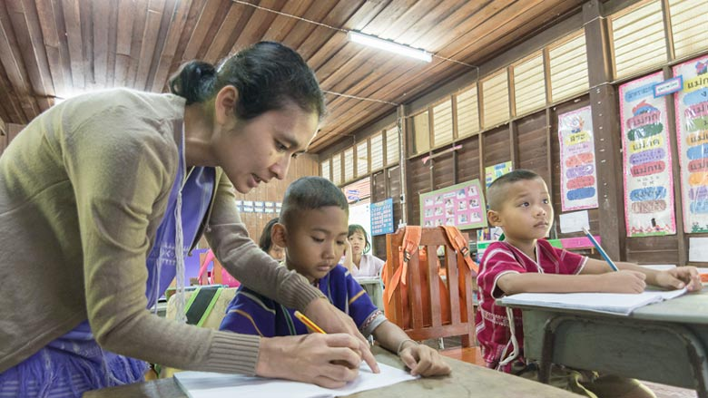

Necesidades de Tailandia
Tailandia, como país en desarrollo, enfrenta diversas necesidades que reflejan tanto su rápido crecimiento económico como los desafíos de una sociedad en transición. Estas necesidades abarcan desde infraestructura hasta educación y sostenibilidad ambiental.
Una de las principales necesidades es mejorar la infraestructura. Tailandia está invirtiendo en proyectos como el Eastern Economic Corridor para modernizar el transporte y la conectividad, especialmente para integrar el país con China y otros vecinos a través de ferrocarriles de alta velocidad.
La educación es otra área crítica. Aunque Tailandia tiene una alta tasa de alfabetización (92.6%), el sistema educativo necesita reformas para fomentar el pensamiento crítico y las habilidades técnicas necesarias para una economía moderna. Los estudiantes tailandeses a menudo carecen de formación en análisis y creatividad.
El acceso a una fuerza laboral calificada es una necesidad urgente. Con una población envejeciendo rápidamente, Tailandia enfrenta escasez de mano de obra joven. Esto ha llevado a depender de trabajadores inmigrantes, lo que genera desafíos sociales y económicos.
La sostenibilidad ambiental es otra preocupación. La deforestación, causada por la expansión agrícola y la tala, ha reducido significativamente la cubierta forestal. Tailandia necesita implementar políticas para proteger sus bosques y recursos naturales.
En el sector de la salud, Tailandia busca mejorar el acceso a equipos médicos avanzados, especialmente en áreas como cardiología y neurocirugía, para consolidarse como líder regional en atención médica.
La reducción de la pobreza sigue siendo una necesidad, aunque ha disminuido del 67% en 1986 al 7.2% en 2015. Las desigualdades regionales, especialmente entre Bangkok y las zonas rurales, requieren políticas inclusivas para garantizar un crecimiento equitativo.
Por último, Tailandia necesita avanzar hacia una economía basada en el conocimiento (Thailand 4.0) para superar la trampa de ingresos medios, lo que implica invertir en innovación y tecnología.
